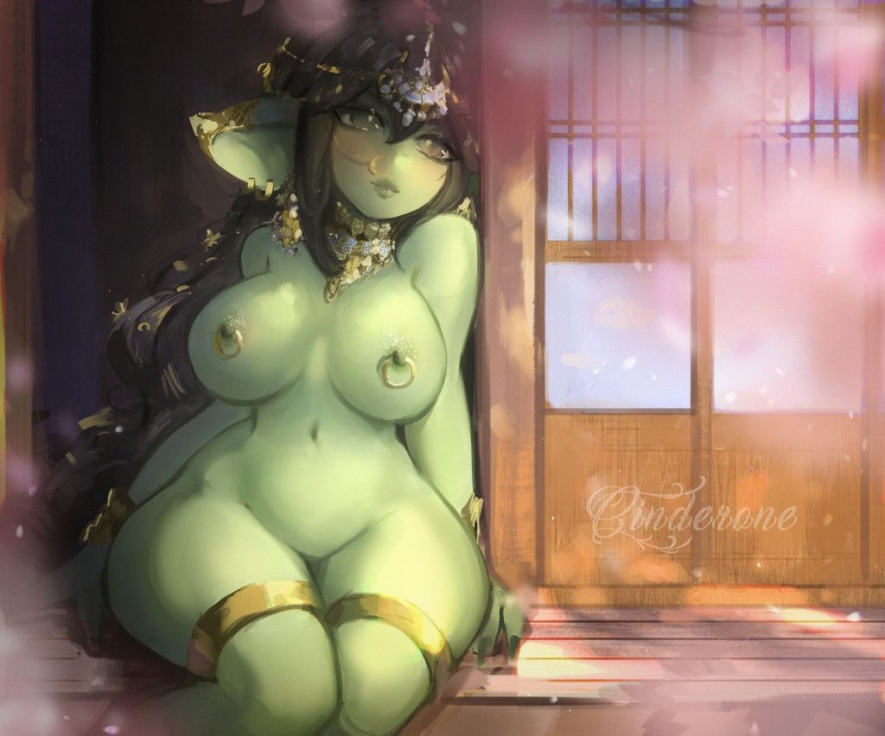

Goblins are an Elvenoid people who were originally native to Irusthrone, but traveled across Eyom, eventually settling in their newfound homeland of Lin Forest. The Goblins and their ancient migration are notable for two reasons; First and foremost no other people as a whole have ever been granted permission by the Guardian Deity of Lin Forest to settle within the tropical paradise. Second, no other species, synthetic or naturally evolved, has ever escaped enslavement by the Wood Elves.
Little is known of the Goblin's origins as they didn't believe in the importance of history during their escape. While understandable, this is greatly frustrating to scholars. What is known is the Goblins were created using biomancy in the same fashion as most other Wood Elf creations. What makes them unique is they were one of the first to be created and can be considered experimental. So experimental that elven lives were used in their creation.
The Goblin's intended purpose was to serve as breeding stock for various creatures used in those ancient days by the Wood Elven armed forces. In this respect Goblins can be considered a failure, as while they can reproduce with any species, the offspring is always a Goblin. While angered at the error in their creation, rather than throw the Goblins to their many hungry monstrosities, the Wood Elves elected to further modify them so that they may serve as shock troops due to how easily and quickly Goblins breed.
This proved a second mistake, as Goblins were more free-willed and free-spirited than intended, and with their enhanced combat abilities were able to mount a revolt and escape under the leadership of the ancient Goblin hero Mä̌sh Mēb "Moxie Raven" Cóń̄y Sēkīr Bēshī (Scholar's Note: Goblin names are lengthy descriptions of themselves. A full Goblin name can occupy the front and back of a page within a standard documentation journal when making use of the minimum legally permitted font size. The abridged written names are still quite cumbersome. Fortunately, all Goblins use Sylvic nicknames due to humans finding Goblin difficult to pronounce. We will use abridged names once, and then their nicknames thereafter.).
The life of Moxie Raven is so enshrined in myth and legend that we have formally requested a dedicated Anthropology Team expressly to untangle the facts from the fiction. We personally put three months into merely determining her ultimate fate only to realize we were entirely wrong in that she yet lives as one of the Goddess Illia's Drill Instructors.
The following are a few of Moxie's purported exploits to contextualize our claim, provide amusement, and direct Tourists to some of the more interesting stories in Goblin Folklore. For full effect, imagine these feets being performed by a belly-high green-skinned plump woman with more obsidian-colored hair on her head than there is volume in the rest of her body combined. On to of which, this tiny woman wore naught by a pair of hobnail boots and leather vest:
- Used a bowie knife as a teething ring and made wild animals her playmates as a toddler.
- Invented the art of being a wyvrenboy, which is like a cowboy, only with wyverns.
- Once lassoed a tornado and swung it into a Great Elder Wyrm.
- Forged the first steel item of the new age, the mythical Doomsedge, which she wielded in her off hand to supplement her other weapon of choice, the maul called Realmhammer (Both weapons exist, its impossible to prove their origins or full histories).
- Exclusively rode bareback, and even then only on a dire lion named Rage, who would only eat food if seasoned with poison.
- Dug the Fō Lǟd Zlë River to speed up delivery of maple syrup for pancakes to her rebel forces.
- Survived a blizzard so cold that when she started a fire the flames froze by lighting a second fire to melt the first one.
- On a bet, she split a warhound clean in two down the middle, length-wise, with a thrown axe. Then stuck the dog back together, bandaged it, and let it run off into the woods.
- She once came across the skeleton of a moose that had died of old age and, just for curiosity, picked up the tracks of the animal and spent the whole afternoon following its trail back to the place where it was born.
- Defeated an ancient formless evil spirit by choking it to death.
While we typically do not discuss history in detail during the summarization of a people, it is very important to understand the impact of the Goblin migration on Eyom. Their travels took them across the majority of the southern, central, and western regions over the course of 500 years. Their travels were the first proof anyone had that Eyom's land was traversable across great distances, that the many monsters and other people of the world were no obstacle to determined travelers.
This sparked the first Great Migration, wherein many of Eyom's peoples chose to set off for faraway lands, settling where they pleased. You can see the effects of this cultural movement to this very day in the jumbled pockets of placenames belonging to random cultures, as well as the general multiculturalism found throughout the world today.
It's also very important to understand the impact Goblins have had on the continental economy. As the Chosen of Tol, with access to all that Lin FOrest has to offer, Goblins are singlehandedly responsible for the creation of the majority of alchemical recipes and breakthroughs and possess a mastery of alchemy an order of magnitude more advanced than even that of the Imperium.
OFFICIAL WARNING!
The Ordos Scholortoria has reviewed this document and concluded much of Goblin culture is improper and degenerate by the standards of the Empire. We pass no judgment on Goblins by this statement. We are simply legally required to warn readers of certain sensitive subjects unfit for children are present in this document and will be discussed in a frank and educational manner for the purposes of science and science alone.
Personality
Goblins are best described by the name of their kind. The word Goblin, while used by all of Eyom to refer to the green-skined Elvenoids of Lin, does not refer to a species. The Lin in Goblin refers to Lin Forrest, their home. The word Gob is simply the Goblin word for harlot.
What would lead a people to refer to themselves genuinely, honestly, and gladly as whores of a forest? Their relationship to the Goddess of Lin forest itself; Tol, Mistress of Jungles, Lady of Spring, Governess of New Life, Guardian of Lin.
Goblins have a unique form of rent to pay for their use of Lin. New life. All Goblins, native to Lin or not, are blessed by Tol with certain powers and abilities. These powers and abilities are maintained through frequent (preferably daily) ritualistic sexual practices, including regular pregnancies. Rather than give birth to children, the new life created in their wombs is transferred to Lin Forest itself, allowing Tol to maintain her realm with much less expense of personal energy.
As this relationship has endured for nearly one thousand five hundred years, and Goblins were originally created specifically to be the mothers of monsters, Goblins fully embraced this relationship. Consequently, they are quite loose, rather cheerful, and quick to proposition not only romantic interests but friends and even family. (Scholar's Note: As Goblins can only reproduce after making an offering to Tol to temporarily stop using that particular Goblin for seeding her forest, they have no taboos against sex as between their full control over family planning and immunity to disease there are no negative consequences to sex for them.)
Goblins, being Elvenoids, only have one sex. Given they are all hermaphrodites, posessing male and female reproductive organs, and live in a tropical jungle with sweltering heat, Goblins have no nudity taboo. They often forgo dressing at all, and when they do dress, it's always in loose flowing garments such as skirts, loincloths, vests, and other things that can simply be pushed aside for adult activities while providing a place to hang pouches and prevent thorns from poking sensitive areas.
The influence of a true Divine is no small thing, consequently, even Goblins who were born outside of Lin and never set foot there share the same looseness, cheerfulness, and overly friendly nature. Fortunately for all, Goblins seem to understand that other species are not as free with sex as they are. Unfortunately, they tend to take it as other people not wanting to play with them or finding them repulsive. It takes a lot of mind-bending thought for Goblins to comprehend the sexuality of other people.
There is more to Goblins than their lusts and lewd natures, of course. They have a fierce love of the natural world, which seems to love them in return. They're also quite competitive in a friendly way. Goblins love to race for the fun of it, will happily wrestle just to see who will win, and most intriguingly of all, turn even simple hobbies such as embroidery into combinations of races and formal sports.
They're also innately curious. Goblins have excellent hearing but poor eyesight. They instinctively want to know what's happening "Over there", and will consequently poke their noses into just about anything simply to know what is going on.
Lastly, Goblins are also natural warriors. If backed into a corner by a threat, they cannot charm or befriend, Goblins will, each and every one of them, fight the threat to the bitter end, be it theirs or the threats. Goblins are incredibly swift. You cannot outrun them. You can fight them, only to discover they don't react to injury with fear, but with an upwelling of determination. They will attack and attack with ever more force until slain. Or, until, far more probably, you falter, and that will be your end.
This also applies to attempting to avoid courting a Goblin who has taken an interest in you. Except instead of violence her weapon of choice is being incredibly kind, endearing, thoughtful, and making a genuine effort to understand you and engage with you in activities you like even if she dislikes them. And also seducing your spouse if you have one since Goblins seem to understand monogamy exclusively as being a two-for-one special on new companions.
Either way, their plan of action is the same. Unrelenting determination. Goblins love to play, hate to lose, and thus, they shift the goalposts until they win or are so utterly defeated victory is truly impossible.
Consequently, Goblin Sports are beyond mere spectacle. Tourists are advised to watch any Goblin sporting match they come across, assuming they have a spare week or so.
Physical Description
Goblins are a short Elvenoid species that appear to be universally female by human standards. They are most notable for their size, as the average goblin's head stops just where the sternum of an average Imperial woman begins. They have body proportions, unlike any other known species, in that they are extremely voluptuous and full of chest, disproportionally so for their small frames.
The common man would think of most goblins as being overweight or even obese due to the bulk of their chest, buttocks, and thighs, as well as the light padding on their stomachs. In actuality, Goblins are incredibly well muscled with very dense musculature systems, and also a secondary muscular system that rests over the top of their primary one. This second muscular system along with a thin layer of fat (no thicker than two finger widths at most) is responsible for their curvaceous appearance.
The Goblin's incredible speed, great strength, and seemingly boundless endurance come directly from the secondary musculature system.
Goblins' facial features are notably pointed, though the points are connected by curves. They possess long knife-shaped ears, which are not only longer than their head is tall, but quite broad, and highly expressive in a manner similar to most canid species. Goblins eyes are notably large and vibrant, coming in any color one can imagine. Their skin is more limited in palate exclusively coming in greens, browns, tans, purples, reds, and orange. Goblin color perception is able to tell the difference between two seemingly identical shades of the same color.
Goblin teeth appear identical to human teeth at a glance but are actually chisel-shaped, and harder than steel. Goblins can easily bite through most substances and are fully capable of eating many seemingly inedible things such as wood, stone, bone, and even dragon scales (which are apparently a delicacy when roasted by the dragon which shed them).
Of course, the Goblin's most notable feature is their hair. Goblins have big hair, to use a local saying. A very apt local saying. Goblin hair grows extremely quickly and comes in every color imaginable, and even a few colors only perceptible by Goblins and insectoids. Their hair naturally forms a massive mane of voluminous poof (Pardon the unprofessional yet only sufficient term) which is generally speaking, larger than the rest of their body by volume. It falls from their heads like a waterfall. It billows like a cape as they run. The mass seems not to bother them, nor does it appear to become entangled on objects, natural or manmade.
With such vibrantly colored masses of hair, it is a wonder how Goblins can be as stealthy as they are.
I, Lady Jean Valemont Grey, take full responsibility for my current and impending actions. I understand the Lord Scholar's concerns about including accurate artwork of Goblins in this report, lest it be seen as an obscene work. Yet I cannot permit this to ship with his poor approximations of Goblins. A Goblin adolescent who has yet to grow her second set of muscles, and an extremely heavily edited oil painting of an adult specimen that looks more like someone painted an Elf green than captured the likeness of a Goblin will not due. I am no artist, I cannot paint vivid pictures from oils. I can sketch, and crudely color with simple water paints. This work does not meet the lofty quality expectations of my order, nonetheless, I present to you a portrait of my finance napping in a doorway with her hair wet from an evening swim.
yes, she is naked. That is how she prefers to be at home. She would be offended dif I painted her with clothing on, because then I would be preventing others from seeing her beauty, which in her own words, would "Make them see your beauty in turn, and you deserve that. Also they're uncomphy, itchy, and making it look like I wear them all the time would be a lie. I don't like lying. It gets complicated and stupid."
Relations
Goblins get along well with most of Eyom's people. This was something they very deliberately and carefully created over centuries. Goblins are not like other people. They don't seek power over their neighbors. They do not seek glory for their people through great works. They don't even particularly care for the acquisition of wealth.
Goblins value friendship. Their specific variety of friendships. Goblins have carefully ensured that, with the exception of Wood Elves, you can find happy Goblin-non-Goblin couples all across Eyom. They have even ensured the most people in Eyom tolerates Goblin's more lewd behaviors. This can be seen in instances where a Goblin might walk into a restaurant wearing only sandels and sit down for a meal without anyone objecting, and the only people to comment on it being children, who upon being told "Its hot, okay?" by the aforementioned Goblin, and then "Its jsut a goblin thing, dear." by their mother simply understood and stopped staring. Nor is any objection raised when a Goblin might jump onto a barrel to embrace and kiss a loved one in public view.
Indeed, objecting to these events often earns one harsh looks and objections from the non-goblins in the area. The Goblins have endeared themselves so much as to make their behaviors "just what Goblins do" to the point where only rural communities object to their behaviors.
This astonishing acceptance was accomplished by "making our culture attractive", which is how they label the process of creating cities, roads, and all the other aspects of civilization.
If Goblins did not have deep-seated instincts to explore new things, as well as their long elven-like lives, they would doubtlessly not inevitably desire "exotic mates", to use a Goblin term. As this is the case, the whole of Goblin civilization which one can find outside of their nomadic camps within Lin is their attempt at "flirting with other peoples". Flirting with other peoples being their cultural interpretation of civilization and the march of progress.
They see great works, powerful armies, grand cities, and geopolitical accomplishments exactly as a handmaiden sees a tailored dress, makeup kit, and box of fine jewelry.
It is impossible to explain the reality to them. Their natural instincts, behaviors, and Tol-Driven-Drives simply make them too alien to understand the reality of these things. That said, Goblins do an extremely good job at having a modern civilized realm within their havens. Even if most of them live as their ancestors did in migratory camps in the forest simply for the love of nature and exploration.
Settlements

 Goblins generally do not live in what most people would consider to be cities or even towns. Most goblins live in nomadic camps inside of tents which are moved through nature with the rest of their tribe (Which is often just a large polyamorous family) along ancient nomadic routes which take years to complete for the express purpose of getting to see specific places in the natural world change over time.
Goblins generally do not live in what most people would consider to be cities or even towns. Most goblins live in nomadic camps inside of tents which are moved through nature with the rest of their tribe (Which is often just a large polyamorous family) along ancient nomadic routes which take years to complete for the express purpose of getting to see specific places in the natural world change over time.
Their cities and towns are based on these camps in layout and are merely permanent structures. As Goblins create civilization expressly to make themselves seem appealing and attractive to others, they will build their cities as grandly and wondrously as the economy permits. Stained glass towers where every room has a floor-to-ceiling window, organic-shaped buildings made from carved stone, and even single settlements created by generations of Goblins carefully tending a living tree as it grows to create a singular structure are all commonplace within Lin Forest.
Goblins generally follow along with local architecture when they live in other places. Though they will do their best to always have the biggest, nicest, most picturesque and inviting homes in town. Naturally, Goblin "renovation wars" are somewhat common. Hardware Store proprietors love Goblin communities.

Alignment
Goblins are notorious for finding rules to be inconsiderate of the circumstances of life. They have their core values, they have their general ways of things, but there are always exceptions to be made for any number of reasons pertinent to a specific event. A crime for which one Goblin is drawn and quartered might see another offender simply forced to wear a woolen jumpsuit for a month without removing it (Note: In Lin's Climate this is almost certain death via heatstroke.)
The Goblins' boundless compassion and helpful nature, while altruistic on the surface, is deeply rooted in personal gain. It just so happens that GOblens wish to gain something that benefits themselves alongside others. There is much debate as to whether Goblins' actions are purely compassionate, or in truth selfish, just in a bizarre way.
Adventurers
All Goblins are adventures. They inevitably feel the call of the wild at many points in life, and will just wander off to find new people places and things before returning home. The only difference is how far they feel like wandering from home this decade, and whether or not they can find some friends (romantic or platonic) to hang out with while going places they are not supposed to and beating up the bad things there in order to rescue damsels in distress, sweep them off their feet, and have a lovely afternoon together before moving on. Unless the damsel wishes to come too. That's totally fine. But it's adventure time, so long-term relationships had best be mobile.